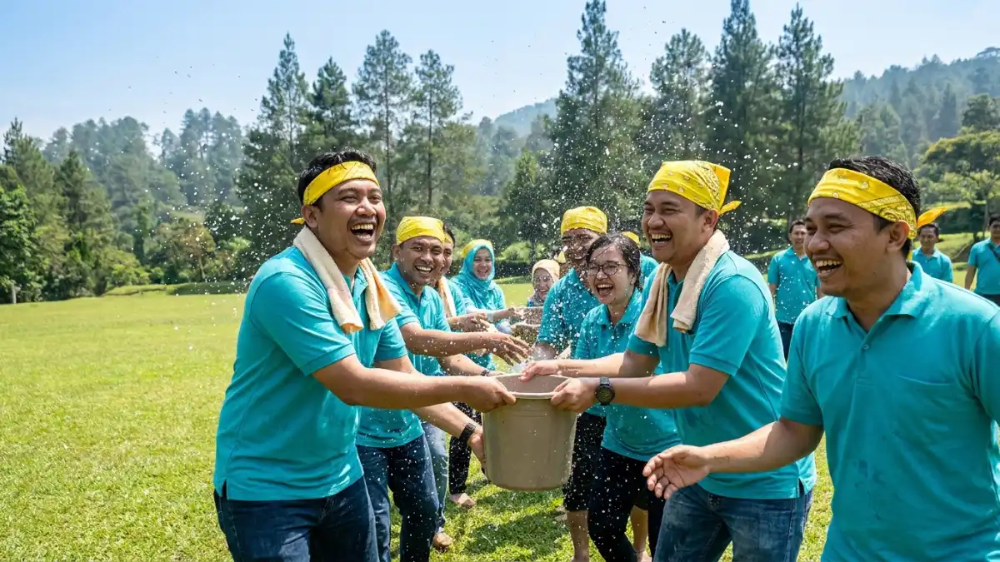

Team building perusahaan adalah rangkaian kegiatan terstruktur yang dirancang untuk memperkuat komunikasi, kepercayaan, dan kolaborasi antaranggota tim di lingkungan kerja. Kegiatan ini efektif ketika tujuan, format, dan evaluasinya dirancang secara sengaja, bukan sekadar hiburan sesaat.
DAFTAR ISI
- 1. Apa Itu Team Building Perusahaan?
- 2. Mengapa Team Building Perusahaan Penting bagi Organisasi?
- 3. Bagaimana Cara Merancang Kegiatan Team Building yang Efektif?
- 4. Apa Saja Jenis Kegiatan Team Building yang Umum Digunakan?
- 5. Apa Manfaat Team Building bagi Karyawan dan Perusahaan?
- 6. Apa Kesalahan Umum dalam Merancang Team Building Perusahaan?
- 7. Bagaimana Cara Mengukur Keberhasilan Team Building?
- 8. Kesalahan Umum Berdasarkan Jenis Tim
- 9. Kesimpulan
- FAQ
1. Apa Itu Team Building Perusahaan?
Team building perusahaan adalah aktivitas terencana yang bertujuan meningkatkan hubungan kerja, komunikasi, dan rasa saling percaya di antara karyawan dalam satu tim atau lintas divisi. Kegiatan ini bisa berupa permainan kelompok, workshop, kegiatan outdoor, hingga simulasi kerja tim.
Berbeda dengan acara hiburan biasa, team building perusahaan dirancang dengan tujuan tertentu, misalnya memperbaiki komunikasi antardivisi, melatih pengambilan keputusan bersama, atau membangun kepercayaan setelah masa kerja yang penuh tekanan.
Karena itu, pemilihan format kegiatan idealnya disesuaikan dengan kondisi tim, bukan sekadar mengikuti tren.
Secara umum, banyak organisasi menganggap kegiatan team building sebagai bagian dari strategi pengembangan budaya kerja, bukan sekadar acara tahunan yang berdiri sendiri. Pendekatan ini umumnya dianggap lebih berkelanjutan karena hasilnya dapat dipantau dari waktu ke waktu, bukan hanya dirasakan pada hari acara berlangsung.
2. Mengapa Team Building Perusahaan Penting bagi Organisasi?
Team building penting karena tim yang berkomunikasi dan saling percaya cenderung bekerja lebih efisien serta lebih tanggap menghadapi masalah bersama. Ketika anggota tim memahami cara kerja satu sama lain, koordinasi tugas sehari-hari menjadi lebih lancar.
Beberapa alasan utama mengapa team building perusahaan dianggap penting:
- Memperkuat komunikasi lintas jabatan dan lintas divisi.
- Membantu karyawan baru beradaptasi lebih cepat dengan budaya tim.
- Mengurangi kesalahpahaman yang sering muncul akibat komunikasi kerja yang bersifat transaksional.
- Membuka ruang untuk mengenal gaya kerja dan kekuatan masing-masing anggota tim.
- Menjadi sarana evaluasi tidak langsung terhadap dinamika tim, termasuk pola kepemimpinan informal.
Pada tahun 2026, tren team building perusahaan cenderung bergeser ke arah kegiatan yang lebih relevan dengan pekerjaan sehari-hari, seperti simulasi pengambilan keputusan atau tantangan kolaboratif, dibandingkan sekadar permainan fisik tanpa kaitan dengan konteks kerja.
3. Bagaimana Cara Merancang Kegiatan Team Building yang Efektif?
Kegiatan team building yang efektif dirancang dengan menentukan tujuan spesifik terlebih dahulu, lalu memilih format kegiatan yang relevan dengan tujuan tersebut, bukan sebaliknya.
Langkah umum yang dapat digunakan:
- Tentukan tujuan utama. Apakah untuk memperbaiki komunikasi, membangun kepercayaan, atau melatih pengambilan keputusan bersama.
- Pahami dinamika tim saat ini. Identifikasi masalah nyata yang sedang dihadapi tim, misalnya konflik antardivisi atau minimnya inisiatif dalam rapat.
- Pilih format kegiatan yang sesuai. Sesuaikan antara kegiatan indoor, outdoor, atau berbasis diskusi dengan tujuan yang ingin dicapai.
- Libatkan seluruh anggota secara setara. Hindari format yang hanya menonjolkan sebagian anggota tim saja.
- Siapkan sesi refleksi. Sisakan waktu untuk mendiskusikan apa yang dipelajari dari kegiatan tersebut.
- Tindak lanjuti setelah acara. Kaitkan hasil refleksi dengan kebiasaan kerja sehari-hari agar dampaknya tidak berhenti pada hari acara.
4. Apa Saja Jenis Kegiatan Team Building yang Umum Digunakan?
Jenis kegiatan team building yang umum digunakan meliputi permainan simulasi pengambilan keputusan, kegiatan outdoor berbasis kerja sama fisik, workshop komunikasi, dan proyek kolaboratif jangka pendek.
Beberapa kategori kegiatan yang sering dipilih perusahaan:
- Simulasi pengambilan keputusan, misalnya studi kasus kelompok atau permainan strategi yang menuntut konsensus tim.
- Kegiatan outdoor, seperti tantangan fisik ringan yang membutuhkan koordinasi kelompok.
- Workshop komunikasi, yang berfokus pada latihan mendengarkan aktif dan memberi umpan balik.
- Proyek kolaboratif singkat, misalnya tantangan menyelesaikan tugas tertentu dalam waktu terbatas.
- Kegiatan berbasis refleksi, seperti diskusi kelompok tentang pengalaman kerja bersama selama periode tertentu.
Pemilihan jenis kegiatan sebaiknya mempertimbangkan ukuran tim, tingkat kenyamanan fisik anggota, serta budaya kerja yang sudah terbentuk di perusahaan.

Kegiatan team building outdoor memfasilitasi komunikasi informal yang efektif. (Ilustrasi)5. Apa Manfaat Team Building bagi Karyawan dan Perusahaan?
Manfaat team building mencakup peningkatan komunikasi, rasa memiliki terhadap tim, serta kemampuan menyelesaikan masalah secara kolektif, yang pada akhirnya dapat mendukung produktivitas kerja sehari-hari.
Manfaat ini dapat dirasakan dari dua sisi:
- Bagi karyawan: rasa memiliki yang lebih kuat terhadap tim, pemahaman yang lebih baik terhadap rekan kerja, serta ruang untuk melatih keterampilan komunikasi di luar tekanan pekerjaan formal.
- Bagi perusahaan: koordinasi antardivisi yang lebih lancar, berkurangnya kesalahpahaman dalam proyek bersama, serta indikasi awal mengenai potensi kepemimpinan informal dalam tim.
Namun, manfaat ini umumnya baru terlihat signifikan apabila kegiatan team building diikuti dengan tindak lanjut yang konsisten, bukan hanya menjadi acara satu kali dalam setahun.
6. Apa Kesalahan Umum dalam Merancang Team Building Perusahaan?
Kesalahan paling umum adalah memilih kegiatan berdasarkan tren atau kepopuleran tanpa mempertimbangkan kebutuhan nyata tim, sehingga hasilnya tidak relevan dengan masalah yang sedang dihadapi.
Beberapa kesalahan yang sering terjadi:
- Menentukan kegiatan tanpa memahami tujuan yang ingin dicapai.
- Memilih format yang terlalu kompetitif sehingga menimbulkan tekanan, bukan kolaborasi.
- Tidak menyediakan waktu refleksi setelah kegiatan berlangsung.
- Mengabaikan kenyamanan fisik atau psikologis sebagian anggota tim.
- Tidak menindaklanjuti hasil kegiatan ke dalam kebiasaan kerja sehari-hari.
Menghindari kesalahan ini umumnya lebih penting daripada mencari kegiatan yang paling unik atau paling ramai diikuti.
7. Bagaimana Cara Mengukur Keberhasilan Team Building?
Keberhasilan team building dapat diukur melalui perubahan pola komunikasi, kualitas kerja sama dalam proyek berikutnya, serta umpan balik langsung dari anggota tim setelah kegiatan berlangsung.
Beberapa indikator yang dapat diperhatikan:
- Perubahan pola komunikasi dalam rapat atau proyek setelah kegiatan.
- Kesediaan anggota tim untuk saling membantu di luar tanggung jawab formal masing-masing.
- Berkurangnya konflik yang berulang pada isu-isu yang sama.
- Umpan balik kualitatif dari peserta mengenai pengalaman dan pembelajaran yang mereka peroleh.
Pengukuran ini sebaiknya dilakukan secara berkala, bukan hanya sesaat setelah acara selesai, karena beberapa dampak baru terlihat dalam interaksi kerja jangka menengah.
8. Kesalahan Umum Berdasarkan Jenis Tim
Setiap tim memiliki karakter berbeda, sehingga pendekatan team building idealnya disesuaikan. Tim dengan anggota baru mungkin lebih membutuhkan kegiatan perkenalan mendalam, sementara tim yang sudah lama bekerja sama mungkin lebih membutuhkan kegiatan yang menguji pola pengambilan keputusan atau menyegarkan cara berkomunikasi yang sudah terbentuk secara rutin.
9. Kesimpulan
Team building perusahaan akan memberi dampak nyata apabila dirancang dengan tujuan yang jelas, disesuaikan dengan kebutuhan tim, dan ditindaklanjuti setelah kegiatan selesai.